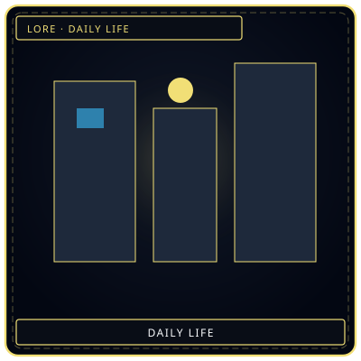
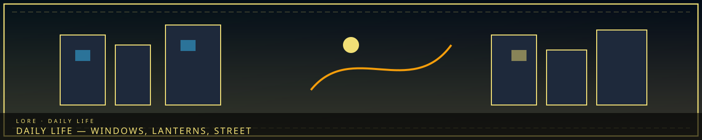
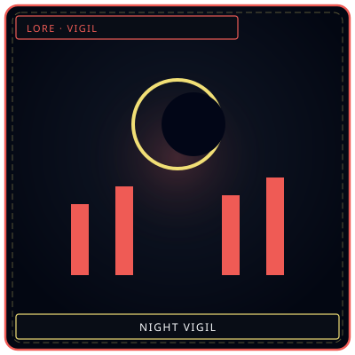
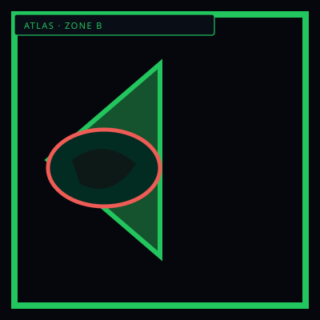

WindowsRooms that still light
/// RAPID JUMP:
STATUS: ARCHIVE VERIFIED |
CLEARANCE: LEVEL-4 OVERSIGHT |
PROTOCOL: REVERIE DIRECTORATE
ARTICLE
DISCUSSION
SOURCE
HISTORY
YEAR 4,238 · DAWN OF HOPE
LORE & WORLD RECORD
Daily Life & Society in Somnarak
Contents
- Overview
- What It Feels Like to Live in the City of Unresolved Sorrow
- Morning (오전 — Ojeon)
- Midday (정오 — Jeongo)
- Evening (저녁 — Jeonyeok)
- Night (밤 — Bam)
- The Rhythm of the Week
- Festivals & Traditions
- The Sounds of Somnarak
- The Smells of Somnarak
- The Colors of Somnarak
- What It Feels Like
- Fashion — What Citizens Wear
- Food — What Citizens Eat
- Celebrations — How Citizens Celebrate
- The Price of Everything
- Echoes — The Currency of Sorrow
- X-C. Population & Statistics
“The city still eats. The lanterns still take a watch.”


VigilNight takes a watch
WardsWhere life happensWhat It Feels Like to Live in the City of Unresolved Sorrow
"Somnarak is not a city you visit. It is a city that happens to you."
Overview
Somnarak has 1.29 billion citizens. Each one wakes up, eats, works, mourns, and sleeps — in a city built on sorrow, powered by grief, and haunted by entities that embody the collective pain of six thousand years.
This is what that looks like.
Morning (오전 — Ojeon)
The Wake-Up
Somnarak wakes at 6:00 AM — not by choice, but by the Veil. The Veil generators cycle every 12 hours — strengthening at 6:00 AM, weakening at 6:00 PM. When the Veil strengthens, the ambient Han drops. Citizens feel lighter. Citizens feel... less.
The alarm is not a sound — it is a feeling. A lightening of the chest. A softening of the sorrow. Citizens wake because the weight lifts — and in Somnarak, that is enough.
"You don't need an alarm in Somnarak. You need the Veil to be kind."
Breakfast
Food in Somnarak is simple — Han-crystal bread, Echo-soup, Veil-water. The food is not delicious. It is functional. The city feeds its citizens because it must, not because it cares.
Zone A — The Veil: Real food. Imported from the Desolate, grown in Han-soil, cooked by professional chefs. Eggs, rice, vegetables, meat. Citizens of Zone A eat well. Citizens of Zone A forget that others do not.
Zone B — The Raw: Han-crystal bread. Dense, heavy, made from crystallized sorrow. The bread is nutritious — but it tastes like grief. Citizens of Zone B eat because they must. Citizens of Zone B have forgotten what real food tastes like.
Zone C — Collector's Row: Echo-soup. A broth made from diluted Echoes — fragments of crystallized emotion, dissolved in water, heated until warm. The soup is cheap, filling, and mildly emotional. Citizens of Zone C eat quickly. Time is money.
Zone D — Echo Gardens: Whatever the artists can find. Zone D has no centralized food system — citizens trade, barter, share, steal. Breakfast might be Han-crystal bread one day, Echo-soup the next, real food the day after. Zone D is chaos. Zone D is alive.
Zone E — The Border: Military rations. The Wardens provide food for Zone E's citizens — standardized, efficient, tasteless. Citizens of Zone E eat at designated times, in designated locations, with designated utensils. Zone E is order. Zone E is exhausted.
The Commute
Somnarak has no cars. No trains. No public transportation. Citizens walk — through streets, through tunnels, through the spaces between buildings. The city is 86 km² — small enough to walk across in a few hours, large enough to get lost in forever.
Zone A — The Veil: Clean streets, maintained infrastructure, working Han-lamps. Citizens walk in straight lines, wearing functional masks, carrying briefcases. Zone A is efficient. Zone A is silent.
Zone B — The Raw: Cracked streets, broken infrastructure, flickering Han-lamps. Citizens walk in clusters — safety in numbers, protection in proximity. Zone B is dangerous. Zone B is loud.
Zone C — Collector's Row: Financial district — clean, organized, watched. Citizens walk quickly, eyes forward, hands in pockets. Every step is monitored. Every transaction is recorded. Zone C is watched. Zone C is afraid.
Zone D — Echo Gardens: Art district — chaotic, colorful, alive. Citizens walk slowly, stopping to listen to street performers, to watch artists paint, to hear Echo-singers perform. Zone D is beautiful. Zone D is broken.
Zone E — The Border: Military zone — checkpoints, patrols, barriers. Citizens walk with identification, with purpose, with permission. Zone E is controlled. Zone E is tired.
Midday (정오 — Jeongo)
Work
Citizens of Somnarak work — not because they want to, but because they must. The debt system requires it. The economy requires it. The city requires it.
Zone A — The Veil: Bureaucrats, administrators, Keepers, Architects. Zone A manages the city — filing reports, processing requests, maintaining systems. The work is important. The work is invisible. The work is never done.
Zone B — The Raw: Laborers, builders, scavengers, Fray members. Zone B builds the city — constructing buildings, repairing infrastructure, harvesting Echoes. The work is dangerous. The work is necessary. The work is underpaid.
Zone C — Collector's Row: Collectors, accountants, auditors, merchants. Zone C manages the debt — tracking obligations, calculating payments, enforcing compliance. The work is precise. The work is cruel. The work is profitable.
Zone D — Echo Gardens: Artists, performers, healers, dreamers. Zone D creates the city — painting murals, singing songs, telling stories, healing wounds. The work is beautiful. The work is undervalued. The work is essential.
Zone E — The Border: Wardens, Menders, soldiers, guards. Zone E protects the city — patrolling borders, maintaining the Veil, defending against threats. The work is dangerous. The work is necessary. The work is thankless.
Lunch
Lunch is the same as breakfast — Han-crystal bread, Echo-soup, Veil-water. Citizens eat at their workplaces, in designated areas, at designated times. The meal is brief. The meal is functional. The meal is forgettable.
"We don't eat for pleasure in Somnarak. We eat for survival. Pleasure is a luxury the city cannot afford."
Evening (저녁 — Jeonyeok)
The Veil Weakens
At 6:00 PM, the Veil weakens. The ambient Han rises. Citizens feel heavier. Citizens feel... more.
This is when Somnarak becomes dangerous. The Veil's protection fades — not completely, but enough. Citizens in the Raw feel the Han more intensely. Entities become more active. The Sorrow Tide approaches.
Citizens of Zone A retreat to their homes — Veil-protected, Han-shielded, safe. Citizens of Zone B brace themselves — the night is coming, and the night is hungry. Citizens of Zone C lock their doors — the Collectors stop working, and the Frays start. Citizens of Zone D gather in groups — safety in numbers, comfort in company. Citizens of Zone E patrol — the Wardens never sleep.
Dinner
Dinner is the same as breakfast and lunch — Han-crystal bread, Echo-soup, Veil-water. But dinner is different. Dinner is shared. Citizens eat together — families, friends, neighbors, strangers. In Somnarak, eating alone is a luxury. Eating together is survival.
Zone A — The Veil: Families eat in silence. The meal is quiet, efficient, functional. Conversation is minimal. Emotions are suppressed. Zone A eats like machines.
Zone B — The Raw: Families eat in groups. The meal is loud, chaotic, alive. Conversation is constant. Emotions are raw. Zone B eats like humans.
Zone C — Collector's Row: Citizens eat alone. The meal is quick, efficient, forgettable. Conversation is unnecessary. Emotions are irrelevant. Zone C eats like numbers.
Zone D — Echo Gardens: Citizens eat together — artists, performers, strangers, friends. The meal is shared, chaotic, beautiful. Conversation is endless. Emotions are celebrated. Zone D eats like a family.
Zone E — The Border: Wardens eat in shifts. The meal is standardized, efficient, tasteless. Conversation is brief. Emotions are controlled. Zone E eats like soldiers.
Night (밤 — Bam)
The Dark Hours
Somnarak at night is a different city. The Han rises. The entities stir. The Sorrow Tide approaches. Citizens who are outside after 10:00 PM are at risk — not from crime, not from violence, but from sorrow.
The Sorrow Tide arrives at midnight — a wave of concentrated Han that sweeps through the city. Citizens feel it — a heaviness, a grief, a sorrow that is not their own. The Tide lasts for two hours. During the Tide, entities are most active. During the Tide, the city weeps.
Citizens who are caught in the Tide experience what the R.D. calls "Han exposure" — a temporary increase in emotional sensitivity. Joy feels like ecstasy. Sorrow feels like despair. Anger feels like rage. The Tide amplifies everything.
Most citizens sleep through the Tide. Those who cannot sleep — the insomniacs, the night workers, the Fray members — feel it fully. Some welcome it. Some fear it. Some Fracture.
The Vigil
In every zone, citizens gather at night — not for pleasure, not for entertainment, but for solidarity. The Vigil is a Somnarak tradition — citizens sitting together in silence, facing the darkness, waiting for the Tide to pass.
The Vigil is not organized. It is not announced. It simply happens — citizens gathering in public spaces, sitting on benches, standing in doorways, leaning against walls. They do not speak. They do not pray. They simply sit — together, silent, present.
"The Vigil is the most human thing in Somnarak. In a city built on sorrow, people choose to face the darkness together. Not because it helps. Not because it changes anything. But because sitting alone in the dark is worse."
Sleep
Citizens of Somnarak sleep — not because they are tired, but because they must. Sleep is the only time the city is quiet. Sleep is the only time the Han is bearable. Sleep is the only time citizens can forget.
Zone A — The Veil: Sleep is easy. The Veil protects. The Han is distant. Citizens sleep in beds, in rooms, in silence. Zone A sleeps like the dead.
Zone B — The Raw: Sleep is hard. The Veil is thin. The Han is close. Citizens sleep in groups, in shifts, in fear. Zone B sleeps with one eye open.
Zone C — Collector's Row: Sleep is efficient. Citizens sleep for exactly 6 hours — no more, no less. The debt does not wait. The obligations do not pause. Zone C sleeps like machines.
Zone D — Echo Gardens: Sleep is chaotic. Artists sleep when they can, where they can, however they can. Some sleep in beds. Some sleep in studios. Some sleep in the Echo Gardens — under the stars, among the crystallized sorrow. Zone D sleeps like dreamers.
Zone E — The Border: Sleep is a luxury. Wardens sleep in shifts — 4 hours on, 4 hours off. The border never sleeps. The threats never stop. Zone E sleeps like soldiers.
The Rhythm of the Week
Somnarak operates on a 7-day cycle — but the days are not named after celestial bodies or gods. They are named after emotions.
| Day | Name | Translation | Character |
|---|---|---|---|
| 1 | 한의 날 | Day of Sorrow | Mourning — citizens visit the Echo Gardens, pay respects to the Fractured |
| 2 | 분노의 날 | Day of Rage | Work — citizens work harder, faster, more desperately |
| 3 | 공허의 날 | Day of Emptiness | Rest — citizens do nothing, feel nothing, exist |
| 4 | 무게의 날 | Day of Weight | Obligation — citizens pay debts, fulfill duties, carry burdens |
| 5 | 눈물의 날 | Day of Tears | Healing — citizens seek healers, share grief, weep openly |
| 6 | 기억의 날 | Day of Memory | Remembering — citizens visit the Archive, tell stories, honor the past |
| 7 | 희망의 날 | Day of Hope | Celebration — citizens gather, sing, dance, pretend |
"We don't have weekends in Somnarak. We have emotions. Each day is a different sorrow. Each day is a different survival."
Festivals & Traditions
The Consolihan (위로한 — Wirohan)
When: Once a year — the anniversary of the Cheongula
What: The city mourns. Citizens gather in the Echo Gardens. The Orphaned Bell tolls. The Hollow Choir sings. The Grieving Colossus pauses. The city weeps — collectively, completely, absolutely.
The Consolihan is not a celebration. It is a release — a day when the city's accumulated sorrow is expressed, shared, and acknowledged. Citizens weep openly. Strangers embrace. The Veil weakens. The Han flows freely.
"The Consolihan is the only day the city is honest. Every other day, we pretend. On the Consolihan, we weep."
The Echo Festival (메아리 축제 — Meori Chukje)
When: Once a month — during the full moon
What: Zone D celebrates. Artists perform. Echo-singers sing. Mask makers sell their wares. Citizens dance, drink, laugh, cry. The Echo Festival is the only time Somnarak feels... alive.
The Festival is not official. It is not organized. It simply happens — artists performing in the streets, citizens gathering in the Echo Gardens, the city breathing for one night.
"The Echo Festival is the only night I feel human. Every other night, I feel like a citizen. On Festival night, I feel like a person."
The Debt Holiday (빚의 휴일 — Bit-ui Hyuil)
When: Once a year — the anniversary of the city's founding
What: The Collectors suspend all debt collection for 24 hours. Citizens are free — not from obligation, but from enforcement. For one day, no one is pursued. No one is pressured. No one is reminded of what they owe.
The Debt Holiday is the most popular day in Somnarak. Citizens celebrate — not because they are happy, but because they are relieved. For one day, the weight lifts. For one day, the city breathes.
"The Debt Holiday is the only day I don't look over my shoulder. Every other day, I wait for the Collectors. On the Holiday, I wait for nothing."
The Sounds of Somnarak
Somnarak is not a silent city. It is a city of sounds — constant, overlapping, haunting.
Zone A — The Veil: Silence. The Veil suppresses sound as it suppresses emotion. Zone A is quiet — eerily, unnaturally quiet. Citizens speak in whispers. Footsteps are muffled. The air is still.
Zone B — The Raw: Noise. The Veil is thin, and the Raw bleeds through. Zone B is loud — voices, footsteps, arguments, crying, laughing, singing. The air is thick with sound. The walls whisper. The ground hums.
Zone C — Collector's Row: Calculation. The sound of numbers — clicking abacuses, rustling ledgers, quiet conversations about debt. Zone C sounds like a library — hushed, focused, intense.
Zone D — Echo Gardens: Music. The sound of creation — artists painting, performers singing, dancers moving, Echo-singers releasing crystallized sorrow as song. Zone D sounds like a concert — chaotic, beautiful, alive.
Zone E — The Border: Orders. The sound of commands — Warden shouts, checkpoint announcements, barrier warnings. Zone E sounds like a military base — sharp, efficient, controlled.
The Deep: Whispers. The sound of the city's foundations — ancient, pre-Structuring, the voice of Somnarak itself. Citizens who listen carefully can hear it — a low hum, a distant murmur, a sorrow that has been building for six thousand years.
The Smells of Somnarak
Zone A — The Veil: Clean. Antiseptic. The smell of maintained infrastructure — fresh paint, polished crystal, filtered air. Zone A smells like a hospital.
Zone B — The Raw: Human. The smell of bodies, of sweat, of cooking food, of burning Han-crystal. Zone B smells like a city — real, raw, alive.
Zone C — Collector's Row: Paper. The smell of ledgers, of ink, of Echo-records. Zone C smells like an archive — dusty, dry, old.
Zone D — Echo Gardens: Flowers. The smell of crystallized sorrow — which, strangely, smells like cherry blossoms. Zone D smells like a garden — beautiful, ethereal, haunting.
Zone E — The Border: Metal. The smell of weapons, of armor, of Han-crystal barriers. Zone E smells like a fortress — cold, hard, sharp.
The Maw: Grief. The smell of the First Sorrow — ancient, heavy, consuming. The Maw smells like loss — the loss of a thousand citizens, the loss of innocence, the loss of hope.
The Colors of Somnarak
Lament (Deep Blue): The color of sorrow — seen in the Veil's glow, in the Echo Gardens' flowers, in the Orphaned Bell's light. Blue is the city's color. Blue is everywhere.
Grudge (Crimson): The color of rage — seen in the Raw's warning lights, in the Wardens' armor, in the Maw's pulsing walls. Crimson is the color of danger. Crimson is the color of survival.
Void (Pale White): The color of emptiness — seen in the Collector's Row's ledgers, in the Frozen Veil's crystal, in the Memory Thief's cloak. White is the color of absence. White is the color of forgetting.
Weight (Black): The color of obligation — seen in the debt system's records, in the Grieving Colossus's tears, in the Broken Clock's hands. Black is the color of burden. Black is the color of the city's foundation.
What It Feels Like
Living in Somnarak is not living. It is enduring. Citizens endure the sorrow, the debt, the entities, the Veil, the Raw, the darkness, the light. They endure because they must. They endure because there is nowhere else to go.
But within the endurance, there is something else — something small, something fragile, something human. There is connection. Citizens who share sorrow understand each other. Citizens who face the darkness together find light. Citizens who mourn together find joy.
"Somnarak is not a happy city. But it is a human city. And in a world built on sorrow, human is enough."
Fashion — What Citizens Wear
The Philosophy of Clothing
In Somnarak, clothing is not fashion. Clothing is function — protection from the Han, identification of faction, expression of sorrow. Citizens wear what they must, not what they want.
The exception: Zone D — where artists wear whatever they please, where fashion is art, where clothing is expression.
Zone A — The Veil
Style: Functional, muted, uniform.
What they wear:
- Masks — every citizen wears a mask in public. Not decorative — functional. The mask suppresses emotion, protects from Han exposure, identifies faction affiliation.
- Grey suits — standardized, efficient, identical. The suit is designed to absorb Han — protecting the wearer from emotional exposure.
- Han-crystal accessories — small, subtle, functional. A pendant that monitors Han levels. A ring that suppresses sorrow. A watch that counts debt.
- Briefcases — every citizen carries one. Inside: documents, Echo-records, debt statements. The briefcase is the citizen's identity — without it, they are no one.
Colors: Grey, white, muted blue. Zone A does not wear color. Color is emotion. Zone A does not wear emotion.
The mask: Zone A masks are plain — smooth, featureless, identical. The mask says: I am not an individual. I am a citizen. The mask is the Veil made physical — a barrier between the self and the world.
Zone B — The Raw
Style: Practical, worn, layered.
What they wear:
- Work clothes — heavy, durable, stained with Han-crystal dust. Laborers wear what survives — not what looks good.
- Scarves — wrapped around the face, the neck, the hands. The scarf protects from Han exposure — filtering the air, absorbing the sorrow.
- Boots — thick, heavy, made of Han-treated leather. The boots protect from the ground — which is sometimes soft, sometimes warm, sometimes alive.
- Patches — sewn onto clothes, each one a debt paid, a shift completed, a day survived. Citizens collect patches like memories.
Colors: Brown, grey, faded blue. Zone B wears the colors of exhaustion — the colors of people who have been working too long.
The scarf: Zone B scarves are personal — each one unique, each one decorated with symbols, patterns, memories. The scarf is the citizen's identity — the one thing they own that is truly theirs.
Zone C — Collector's Row
Style: Sharp, precise, calculated.
What they wear:
- Suits — black, tailored, expensive. The suit is a statement: I am successful. I am powerful. I am not afraid.
- Debt markers — small, crystallized tokens worn on the lapel. Each marker represents a debt managed — a visual display of the Collector's skill.
- Ledger books — carried in leather cases, always at hand. The ledger is the Collector's weapon — the tool of their trade.
- Gloves — thin, precise, Han-crystal threaded. The gloves protect from Han — but also allow the Collector to feel the weight of debt.
Colors: Black, white, silver. Zone C wears the colors of calculation — the colors of people who see the world in numbers.
The debt marker: Zone C debt markers are competitive — citizens display their markers like medals, showing how many debts they have managed. More markers = more respect.
Zone D — Echo Gardens
Style: Chaotic, colorful, expressive.
What they wear:
- Anything — Zone D has no dress code. Citizens wear whatever they find, whatever they make, whatever they steal. A painter might wear a dress made of Echo-shards. A singer might wear a cloak of crystallized tears. A dancer might wear nothing at all.
- Masks — but not functional masks. Decorative masks — beautiful, expressive, unique. Zone D masks are art — each one a statement, each one a story.
- Echo jewelry — made from crystallized sorrow — earrings, necklaces, bracelets. The jewelry glows faintly — pulsing with the wearer's emotions.
- Bare feet — many Zone D citizens go barefoot. The ground is warm — the Han beneath the surface radiates heat. Walking barefoot is walking on sorrow.
Colors: Every color. Zone D wears the colors of chaos — red, blue, green, gold, purple. Zone D is the only zone where color is celebrated.
The mask: Zone D masks are the opposite of Zone A masks — expressive, emotional, unique. The mask says: I am an individual. I am a story. I am alive.
Zone E — The Border
Style: Military, standardized, efficient.
What they wear:
- Armor — Han-crystal plates, designed to absorb Han-energy. The armor is heavy, uncomfortable, necessary.
- Uniforms — grey, standardized, identical. The uniform is the Warden's identity — without it, they are a citizen. With it, they are the law.
- Weapons — Han-crystal blades, shields, batons. The weapons are always visible — a reminder that Zone E is a border, not a home.
- Identification — worn on the chest, visible to all. The identification is the Warden's name, rank, faction. Without it, they are no one.
Colors: Grey, black, dark blue. Zone E wears the colors of duty — the colors of people who have given up their identity for the city.
The identification: Zone E identification is sacred — losing it is a crime, forging it is a Taboo violation, sharing it is forbidden.
Food — What Citizens Eat
The Philosophy of Food
In Somnarak, food is not pleasure. Food is fuel — energy for the body, sorrow for the city. Citizens eat because they must, not because they want to.
The exception: Zone D — where food is art, where cooking is creation, where eating is celebration.
The Staples
| Food | Description | Zone | Taste |
|---|---|---|---|
| Han-crystal bread | Dense, heavy bread made from crystallized sorrow | B, E | Bitter, metallic, filling |
| Echo-soup | Broth made from diluted Echoes — fragments of emotion | C | Warm, faintly emotional, forgettable |
| Veil-water | Water filtered through the Veil — clean, pure, tasteless | A | Nothing — absolutely nothing |
| Han-rice | Rice grown in Han-soil — slightly blue, slightly sad | A | Nutty, faintly sorrowful |
| Sorrow-stew | Stew made from whatever is available — vegetables, Echoes, Han-crystal | B, D | Different every time — sometimes good, sometimes terrible |
| Collector's rations | Standardized meals — efficient, tasteless, nutritious | C | Nothing — designed to be forgotten |
| Warden's rations | Military meals — durable, portable, tasteless | E | Bland, functional, depressing |
| Artist's feast | Whatever the artists can find — shared, chaotic, delicious | D | Different every time — sometimes amazing, sometimes awful |
The Meals
Breakfast (아침 — Achim)
Time: 6:00 AM — when the Veil strengthens
What citizens eat:
- Zone A: Han-rice, Veil-water, a small portion of real vegetables. Eaten in silence, at a table, with utensils.
- Zone B: Han-crystal bread, a cup of Echo-soup. Eaten standing, on the way to work, with hands.
- Zone C: Collector's rations — a small package of standardized food. Eaten at the desk, while working, without thinking.
- Zone D: Whatever is available — sometimes bread, sometimes soup, sometimes nothing. Eaten in groups, in the street, with laughter.
- Zone E: Warden's rations — a compact meal, designed for portability. Eaten in shifts, at the checkpoint, with efficiency.
Lunch (점심 — Jeomsim)
Time: 12:00 PM — midday
What citizens eat:
- Zone A: Han-rice, a small portion of meat, Veil-water. Eaten in a dining hall, with colleagues, in silence.
- Zone B: Han-crystal bread, Echo-soup, whatever is available. Eaten at the construction site, with coworkers, with complaints.
- Zone C: Collector's rations — the same as breakfast. Eaten at the desk, while working, without pausing.
- Zone D: Shared meals — artists pooling resources, cooking together, eating together. Eaten in the Echo Gardens, with music, with joy.
- Zone E: Warden's rations — the same as breakfast. Eaten at the checkpoint, while patrolling, without rest.
Dinner (저녁 — Jeonyeok)
Time: 6:00 PM — when the Veil weakens
What citizens eat:
- Zone A: Han-rice, a small portion of fish, Veil-water. Eaten at home, with family, in silence.
- Zone B: Sorrow-stew — whatever is available, cooked in a communal pot. Eaten in groups, with neighbors, with stories.
- Zone C: Collector's rations — the same as breakfast and lunch. Eaten alone, at home, without company.
- Zone D: Artist's feast — whatever the artists have found, cooked with love, shared with everyone. Eaten in the Echo Gardens, with music, with celebration.
- Zone E: Warden's rations — the same as breakfast and lunch. Eaten in shifts, at the checkpoint, without comfort.
Special Foods
| Food | Description | When | Where |
|---|---|---|---|
| Consolihan bread | Bread baked with tears — literally. Citizens weep into the dough. | Consolihan | All zones |
| Echo cakes | Cakes made from crystallized Echoes — each bite a different emotion | Echo Festival | Zone D |
| Debt-free soup | Soup made without any Han-crystal — pure, clean, rare | Debt Holiday | All zones |
| Mourner's tea | Tea brewed from crystallized sorrow — calming, sad, addictive | Funerals | All zones |
| Fracture candy | Candy made from Fractured citizens' last emotions — dangerous, sweet, forbidden | Black market | Zone B, D |
| The First Meal | A meal served at the Consolihan — the same meal served 6,000 years ago | Consolihan | Zone A |
Cooking
Who cooks:
- Zone A: Professional chefs — employed by the Council, trained in Han-neutral cooking.
- Zone B: Citizens cook for themselves — communal pots, shared meals, whatever is available.
- Zone C: No one cooks — Collector's rations are pre-made, pre-packaged, pre-forgotten.
- Zone D: Everyone cooks — artists, performers, strangers. Cooking is art. Cooking is love.
- Zone E: The Wardens cook — standardized meals, efficient preparation, tasteless results.
The communal pot: In Zone B, citizens share a communal pot — a large vessel where everyone contributes whatever they have. The pot is never empty. The pot is never full. The pot is always shared.
Celebrations — How Citizens Celebrate
The Philosophy of Celebration
In Somnarak, celebration is not joy. Celebration is release — a moment when the city's accumulated sorrow is expressed, shared, and acknowledged. Citizens celebrate not because they are happy, but because they need to be human.
The exception: Zone D — where celebration is joy, where music is life, where dancing is survival.
The Consolihan (위로한 — Wirohan)
When: Once a year — the anniversary of the Cheongula
Duration: 3 days
What happens:
- Day 1: The Mourning — citizens gather in the Echo Gardens, weep openly, share grief
- Day 2: The Remembering — citizens tell stories of the lost, honor the dead, preserve memory
- Day 3: The Release — citizens let go of accumulated sorrow, breathe, exist
What citizens wear: Black — the color of mourning. No masks. No Veil. Just faces, exposed, vulnerable.
What citizens eat: Consolihan bread — baked with tears, shared with strangers. The bread is sad. The bread is honest. The bread is human.
What citizens do: Weep. Remember. Release. The Consolihan is not a celebration. It is a confession — the city's admission that it is built on sorrow.
The Echo Festival (메아리 축제 — Meori Chukje)
When: Once a month — during the full moon
Duration: 1 night
What happens:
- Sunset: Artists gather in the Echo Gardens — setting up stages, preparing instruments, decorating with Echo-shards.
- Night: Performances begin — Echo-singers releasing crystallized sorrow as song, dancers moving to the rhythm of grief, painters creating art from Han-crystal.
- Midnight: The Sorrow Tide arrives — but during the Festival, the Tide becomes music. The city's sorrow becomes a symphony.
- Dawn: The Festival ends — citizens return to their lives, carrying the memory of one night of beauty.
What citizens wear: Whatever they want — colorful, chaotic, expressive. Masks are decorative — beautiful, unique, artistic. Clothing is art.
What citizens eat: Echo cakes — each bite a different emotion. Shared with strangers, traded for stories, eaten with laughter.
What citizens do: Dance. Sing. Create. The Echo Festival is the only time Somnarak feels alive — the only time the city breathes, the only time the sorrow becomes beauty.
The Debt Holiday (빚의 휴일 — Bit-ui Hyuil)
When: Once a year — the anniversary of the city's founding
Duration: 24 hours
What happens:
- Midnight: The Collectors stop — all debt collection suspended, all obligations paused, all enforcement halted.
- Day: Citizens celebrate — not with joy, but with relief. The weight lifts. The burden eases. The city breathes.
- Midnight: The Collectors resume — the weight returns, the burden resumes, the city holds its breath again.
What citizens wear: Whatever they want — no uniforms, no masks, no identification. For one day, citizens are not numbers. They are people.
What citizens eat: Debt-free soup — made without Han-crystal, pure, clean, rare. The soup tastes like freedom.
What citizens do: Nothing. Absolutely nothing. Citizens sit, stand, walk, breathe. They do not work. They do not pay. They do not owe. For one day, they are free.
Personal Celebrations
Birthdays:
In Somnarak, birthdays are not celebrated. They are mourned — another year survived, another year of sorrow, another year of debt. Citizens do not say "Happy Birthday." They say: "You survived."
Weddings:
Weddings are rare — the debt system makes marriage expensive. When weddings happen, they are small, quiet, functional. The couple exchanges debt obligations — merging their sorrows into one. The ceremony is short. The celebration is shorter.
Deaths:
Deaths are common — Fracture, Han exposure, natural causes. When a citizen dies, the body is crystallized — turned into Han-crystal. The crystal is buried in the Echo Gardens — adding to the city's sorrow, adding to the city's foundation.
The Vigil:
The Vigil is the most common celebration — citizens sitting together in silence, facing the darkness, waiting for the Tide to pass. The Vigil is not organized. The Vigil is not announced. The Vigil simply happens — because in Somnarak, sitting alone in the dark is worse.
CANONICAL CROSS-LINKS & ATLAS CONNECTIONS
The Price of Everything
The Price of Everything
In Somnarak, nothing is free. Every action has a cost measured in sorrow.
| Action | Cost | Mechanism |
|---|---|---|
| Using power/ability | Memories, emotional capacity, or years of life | Han is the fuel — using it burns something personal |
| Building/creating | Sourcing Han — collecting grief | Architects must harvest sorrow to shape it |
| Healing | Transferring wounds to another | Sorrow moves — it doesn't disappear |
| Knowledge | The Archive trades in memories | The Keepers' currency is identity |
| Travel | "Toll" paid to the city | The city feeds on movement |
| M.A.W. use | Emotional drain, memory bleed, Fracture risk | The entity's sorrow seeps into the wearer |
The Cycle of Debt
What is debt? Every action creates a debt in the Abyss — physical, measurable, enforceable.
How debt manifests:
- Physical: Aging, illness, weakness, pain
- Emotional: Numbness, despair, rage, grief
- Metaphysical: Bad luck, misfortune, attracting Sorrow Entities
- Structural: The city itself responds — buildings crack, paths close
Debt mechanics:
| Action | Debt Created | Payment |
|---|---|---|
| Living (daily) | Small — ambient | Paid by existing in the city |
| Using M.A.W. | Moderate — per use | Emotional/physical toll |
| Causing harm | Large — proportional | Karmic balance |
| Creating sorrow | Massive — amplified | Suffering or Echoes |
| Refusing to pay | Accumulates — interest | The Collectors come |
Debt transfer: Debts can be transferred — with consent or force. The powerful transfer to the weak. Inherited debts pass parent to child.
Debt payment: Suffering, Echoes, service, or sacrifice.
Echoes — The Currency of Sorrow
Echoes — The Currency of Sorrow (메아리 — Meori)
What they are: Crystallized fragments of memory/emotion — formed when intense emotions are experienced and then lost.
How they form: When a person experiences intense emotion and then loses it (death, memory loss, fading), the emotion crystallizes into a physical object — small, translucent, faintly warm.
Value Scale:
| Echo Type | Value | Rarity | Color |
|---|---|---|---|
| Common sorrow | Low | Abundant | Grey |
| Deep grief | Moderate | Common | Dark blue |
| Profound rage | Moderate-High | Uncommon | Crimson |
| Genuine joy | High | Rare | Gold |
| Pure love | Very High | Extremely rare | White |
| First sorrow | Priceless | Singular | Black |
Uses: Trade, consumption (addictive), refinement, M.A.W. fuel, dark market harvest.
X-C. Population & Statistics
Somnarak Population Estimate
This table — and every zone, district, and faction population figure elsewhere in this document — records the counted establishment: the citizens the Council's forms actually reach. The true mass of humanity in the Somnarak Sphere is given at the end of this section.
| Zone | Area | Population | Density | Character |
|---|---|---|---|---|
| A | 1.7 km² | ~2,000 | 1,176/km² | Faction elite, Council, staff |
| B | 15.5 km² | ~120,000 | 7,742/km² | Oldest families, debt-heavy, outcasts |
| C | 18.9 km² | ~180,000 | 9,524/km² | System workers, military, merchants |
| D | 21.5 km² | ~250,000 | 11,628/km² | Diverse middle class, workers, families |
| E | 28.4 km² | ~46,000 | 1,620/km² | Frontier, military, isolationists |
| Total | 86 km² | ~598,000 | 6,953/km² |
Desolate Population Estimate
| Group | Population |
|---|---|
| Exiles | ~2,000 |
| Frontier families | ~5,000 |
| Nomads | ~3,000 |
| Outcasts | ~4,000 |
| Scavengers | ~1,500 |
| R.D. field agents | ~500 |
| Total | ~16,000 |
Grand Total — The Somnarak Sphere
| Area | Population |
|---|---|
| Somnarak (counted establishment) | ~598,000 |
| Somnarak (true, inside the walls) | ~1,290,000,000 |
| Around the city — the Fringe (un-counted, outside but around) | ~1,290,000,000 |
| — Somnarak slums (pressed against the outer wall) | ~700,000,000 |
| — Somnarak villages (settled through the halo) | ~340,000,000 |
| — Somnarak outside tribes (peoples of the deep halo) | ~160,000,000 |
| — Somnarak nomads (walking the Han-flows) | ~90,000,000 |
| The Desolate (buffer strip) | ~16,000 |
| The Somnarak Sphere | ~2,580,000,000 — ≈30% of Mugenhan's 8.6 billion |
Faction Personnel Estimates
| Faction | Personnel | % of Counted Establishment |
|---|---|---|
| Council of Sighs | ~50 | <0.01% |
| Architects | ~15,000 | 2.5% |
| Collectors | ~8,000 | 1.3% |
| Keepers | ~5,000 | 0.8% |
| Wardens | ~30,000 | 5.0% |
| Weavers | ~3,000 | 0.5% |
| R.D. (Reverie Directorate) | ~2,000 | 0.3% |
| Total faction | ~63,050 | ~10.6% |
Sorrow Entity Registry (Known)
By Coherence and Potency:
| Coherence | α | β | γ | δ | ω | Total |
|---|---|---|---|---|---|---|
| I — Residue | 41 | 0 | 0 | 0 | 0 | 41 |
| II — Echo | 5 | 55 | 1 | 0 | 0 | 61 |
| III — Fragment | 0 | 11 | 52 | 1 | 0 | 64 |
| IV — Entity | 0 | 4 | 11 | 54 | 1 | 70 |
| V — Sovereign | 0 | 0 | 4 | 5 | 1 | 10 |
| Total | 46 | 70 | 68 | 60 | 2 | 246 |
By Sorrow Category:
| Category | Total | % | Character |
|---|---|---|---|
| City Sorrow (도한) | 133 | 54% | Born from the city's systems, institutions, accumulated institutional grief |
| Outside Sorrow (외한) | 51 | 21% | Born from the wilderness, Desolate, external forces |
| Inner Sorrow (내한) | 62 | 25% | Born from personal grief, individual trauma, private pain |
Category distribution by Coherence:
| Coherence | City | Outside | Inner | Notes |
|---|---|---|---|---|
| I — Residue | 20 | 14 | 7 | Most Residue is City Sorrow — ambient, structural |
| II — Echo | 30 | 11 | 20 | Echo forms from all three, but City dominates |
| III — Fragment | 32 | 13 | 19 | Fragments form more evenly — personal trauma creates coherent entities |
| IV — Entity | 42 | 12 | 16 | Entities are rare — requires sustained, focused sorrow |
| V — Sovereign | 9 | 1 | 0 | Sovereigns are almost exclusively City Sorrow — the city itself breeds them |
M.A.W. Registry (Known)
| Grade | Weapons | Armor | Tools | Accessories | Hybrid | Total |
|---|---|---|---|---|---|---|
| α | 18 | 12 | 8 | 6 | 2 | 46 |
| β | 14 | 10 | 6 | 4 | 1 | 35 |
| γ | 7 | 5 | 3 | 2 | 1 | 18 |
| δ | 3 | 2 | 1 | 1 | 0 | 7 |
| ω | 0 | 0 | 0 | 0 | 0 | 0 |
| Total | 42 | 29 | 18 | 13 | 4 | 106 |